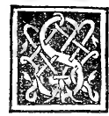
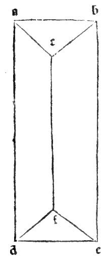

CHAPTER LVIII¶
On Oblong Bodies, That Is, Bodies Longer or Higher Than They Are Wide: And First on the Round Column (Cylinder, Plates XLIII–XLIV).

It now follows in order, most lofty Duke, for the complete understanding of this treatise, to say something concerning oblong bodies (corpi oblonghi)—that is, bodies that are longer or higher than they are wide, such as columns (colonne, cylinders and prisms) and their pyramids (pyramidi, cones and pyramids), of which many species are found. First we shall treat of columns and their origin, and then of their pyramids.
Columns are of two kinds: round (rotonde, cylinders) and lateral/faceted (laterate, prisms), just as plane figures are divided into curvilinear (bounded by curved lines) and rectilinear (bounded by straight lines).
Definition and Generation of the Round Column (Cylinder, [XI.Def.21])
The round column (colonna rotonda, cylinder) is a solid body contained between two equal and parallel circular bases, described by the revolution of a right-angled parallelogram when one of its sides containing the right angle remains fixed as the axis and the parallelogram is turned completely around until it returns to the place from which it began to move ([XI.Def.21]). And the round column, the sphere, and the circle that have the same diameter all share one and the same center.
Let \(abcd\) be a right-angled parallelogram (rectangle), and hold its vertical side \(ab\) fixed while revolving the rectangle \(abcd\) completely around \(ab\) until it returns to its starting position (see the marginal diagram
0052.g1.pngon Folio 0052, and Plates XLIII–XLIV).The solid figure traced out by the revolution of \(abcd\) is the round column (cylinder). Its fixed side \(ab\) is the axis (l’axe) of the column; the horizontal sides \(bc\) and \(ad\) sweep out the two parallel circular bases with centers \(b\) and \(a\); and the outer side \(cd\) sweeps out the curved cylindrical surface.
Now consider the rectangle \(abcd\) at the moment when its revolution brings it to the opposite side \(abef\) in the same plane, so that the two halves together form a single axial cross-section rectangle \(dcef\).
Draw the diagonal \(de\) across the axial rectangle \(dcef\), cutting the axis \(ab\) at point \(g\). We say that \(de\) is the diameter of the column, and that \(g\) is the common center of the column, of the circle described on diameter \(de\), and of the sphere circumscribing the column!
Proof:
In the two triangles \(agd\) and \(bgc\) (or \(bge\)), the vertical angles at \(g\) are equal by the fifteenth of the first; the angles at \(a\) and \(b\) are right angles by hypothesis; and the opposite radii \(ad\) and \(be\) (each equal to \(bc\)) are equal.
Therefore, by the twenty-sixth of the first, the axis is bisected at \(g\) (\(ag = gb\)), and the diameter \(de\) is also bisected at \(g\) (\(dg = ge\)).
Moreover, since the corner angles at \(c, d, e, f\) of the rectangle \(dcef\) are right angles, by the converse of the thirty-first of the third (la trigesima del terzo in Campanus), a circle described with center \(g\) and radius \(gd = ge\) passes through all four corners \(d, c, e, f\)!
And as the rectangle revolves around the axis \(ab\), this circle sweeps out the circumscribing sphere of diameter \(de\) centered at \(g\).
Therefore, a circle can be circumscribed around every right-angled parallelogram, and a sphere can be circumscribed around every right round column, all sharing the same center \(g\)!
Marginal Woodcut Diagrams (Paganini 1509)¶

Folio 0052 Diagram 1¶